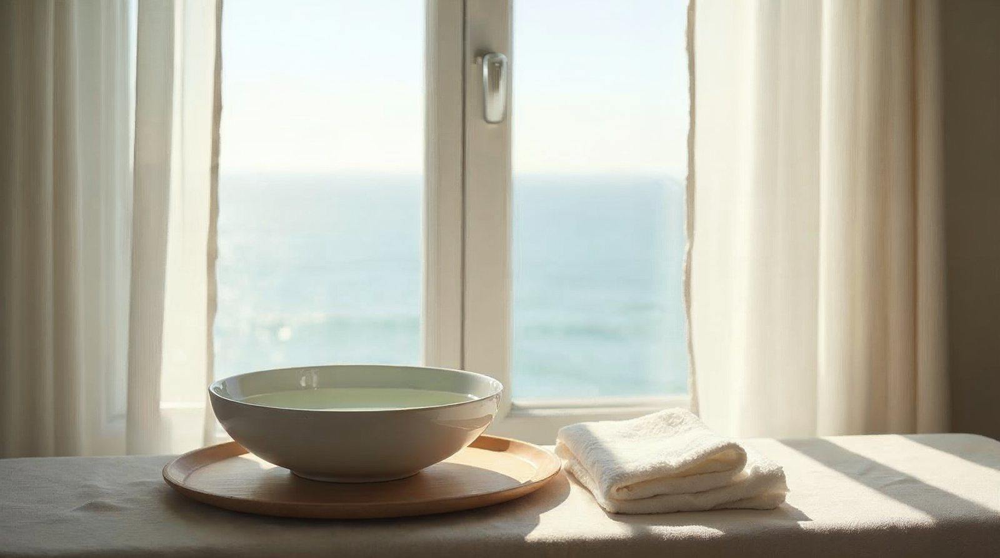
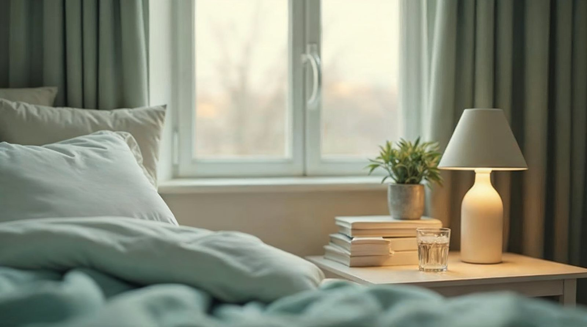

이종호 한의사 감수좋은꿈참사랑한의원 대표원장 (한의사 면허번호 19769)발행 2026-11-23 · 수정 2026-11-26
이 글의 차례
- 시간대별로 이렇게 나눠 보세요
- 왜 이런 불편이 생길 수 있나요
- 왜 밤이 되면 더 가려울까요?
- 비슷해 보여도 따로 살펴야 하는 경우는요?
- 먹는 것과 긴장도 가려움에 영향을 주나요?
- 먼저 이렇게 여쭙니다
- 예를 들면 이런 상황입니다
- 스스로 점검해 보세요
- 일상에서 먼저 해 볼 수 있는 것
- 긁고 싶을 때는 무엇을 대신 해 볼까요?
- 계절에 따라 가려움은 어떻게 달라지나요?
- 한의원에서 함께 살필 수 있는 경우
- 첫 방문은 이렇게 진행됩니다
- 침과 한약은 어떤 때 이야기하나요?
- 다시 오시면 무엇을 여쭙나요?
- 얼마나 지켜보고 언제 상담할까요
- 이렇게 기록해 오시면 상담이 쉬워집니다
- 이런 증상은 먼저 확인이 필요합니다
가려움은 하루 중 같은 강도로 이어지지 않는 경우가 많습니다. 언제 심해지는지를 알면 땀, 옷, 실내 온도, 잠자리 환경처럼 함께 살펴볼 생활이 보이기 때문에, 시간과 그때의 상황을 짧게라도 적어 두시길 권합니다.
낮에는 바빠서 잊고 지내다가, 불을 끄고 누우면 그제야 등과 다리가 가렵기 시작하는 밤이 있습니다. 긁다가 시계를 보면 벌써 새벽이고, 아침에는 긁은 자국만 남아 있지요.
진료실에서 가려움 이야기를 들을 때 저는 하루 중 언제 가장 손이 가는지부터 여쭙습니다. 어디가 가려운지만큼이나 언제 가려운지가 생활 속 원인을 찾는 데 중요한 단서가 되는 경우가 많기 때문입니다.
시간대별로 이렇게 나눠 보세요
- 아침: 일어나 옷을 갈아입을 때나 세수 뒤에 가렵다면, 밤사이 건조해진 피부나 잠옷과 이불의 쓸림을 함께 봅니다.
- 낮: 활동하며 땀이 난 뒤, 외출에서 돌아온 뒤, 특정 옷을 입은 날 가렵다면 땀과 옷감, 바깥 환경을 살핍니다.
- 저녁: 샤워 뒤 30분 안에 가렵다면 물 온도와 씻는 방법, 보습 시점을 먼저 봅니다.
- 밤: 잠자리에 들고 이불 속이 따뜻해지면 가렵다면 침실 온도, 이불 두께, 몸의 열감을 함께 살핍니다.
말로 옮기면 "샤워만 하면 가려워요", "자려고 누우면 가려워서 잠이 안 와요", "땀나면 따가우면서 가려워요"처럼 상황과 함께 말씀해 주시면 됩니다. 시간과 상황을 묶어 말하는 것만으로도 이야기가 훨씬 구체적이 됩니다.
가려움의 느낌도 함께 나눠 주세요. 따끔따끔한지, 스멀스멀 기어가는 것 같은지, 화끈거리며 가려운지에 따라 여쭐 질문이 조금씩 달라집니다.
가려운 자리가 몸 양쪽에 비슷하게 있는지, 한쪽에만 있는지도 함께 봐 주세요. 접히는 자리, 옷이 닿는 자리, 햇빛을 받는 자리처럼 가려운 곳의 공통점을 찾으면 생활에서 손볼 부분이 더 분명해집니다.
왜 이런 불편이 생길 수 있나요
- 밤에는 이불 속 온도가 올라가고 주변이 조용해 가려움을 더 크게 느끼는 분이 많습니다.
- 뜨거운 물로 오래 씻으면 피부가 건조해져 샤워 뒤 가려움이 심해지기도 합니다.
- 땀이 마르거나 옷감이 쓸리는 부위가 가려워지는 경우가 있습니다.
- 긴장이나 피로가 큰 날 가려움이 심해진다는 분도 있습니다.
조금 더 풀어 보면, 피부 바깥층은 수분이 날아가지 않게 막아 주는 벽 역할을 합니다. 이 벽이 건조함이나 잦은 세정으로 약해지면 작은 자극에도 가려움을 느끼기 쉬워집니다. 겨울철 난방과 뜨거운 샤워가 겹치면 특히 그렇습니다.
몸이 따뜻해지면 피부 쪽으로 피가 더 몰리면서 가려움이 커지기도 합니다. 그래서 운동 뒤, 뜨거운 음식을 먹은 뒤, 술을 마신 뒤, 이불 속이 따뜻해진 뒤에 가렵다고 말씀하시는 분이 많습니다.
왜 밤이 되면 더 가려울까요?
밤에는 낮 동안 일과 대화에 가 있던 주의가 몸으로 돌아오면서 같은 가려움도 더 또렷하게 느껴지기 쉽습니다. 여기에 이불 속 온도가 올라가고 피부가 건조해지는 조건이 겹치면 잠들기 전 가려움이 커지기 쉽습니다.
자다가 무의식중에 긁으면 피부가 자극을 받아 다시 가려워지는 고리가 생기기도 합니다. 아침에 일어나 보니 긁은 자국이 있다면 그 자리와 개수를 적어 두세요. 밤의 가려움을 짐작하는 중요한 단서가 됩니다.
밤의 가려움 때문에 잠을 설치면 다음 날 피로와 긴장이 커지고, 그것이 다시 가려움을 키우는 흐름으로 이어지기도 합니다. 그래서 저는 가려움 이야기를 들을 때 잠의 모양도 꼭 함께 여쭙습니다.
비슷해 보여도 따로 살펴야 하는 경우는요?
- 피부에 보이는 변화 없이 온몸이 가렵고 몇 주째 이어진다면, 몸 전체의 상태를 확인하기 위해 내과 진료와 혈액검사를 먼저 권하기도 합니다.
- 새 약을 먹기 시작한 뒤 가려움이 생겼다면 그 날짜를 적어 처방한 의사에게 먼저 알려 주세요.
- 같은 집에 사는 가족도 비슷하게 가려워한다면 피부과에서 함께 확인받아 보시길 권합니다.
- 새로 바꾼 세제나 화장품, 목걸이나 시곗줄이 닿는 자리만 가렵다면 닿는 물건과의 관계를 먼저 살핍니다.
저녁마다 두드러기가 올라왔다 사라지는 쪽이라면 저녁만 되면 두드러기가 올라왔다 사라지기를 반복할 때는 어떻게 살피나요?도 함께 읽어 보세요.
먹는 것과 긴장도 가려움에 영향을 주나요?
맵고 뜨거운 음식이나 술을 먹은 날은 기록에 표시만 해 두셔도 관계를 찾는 데 도움이 됩니다.
특정 음식을 먹은 뒤 가렵다고 느끼시면 먹은 음식과 시각을 적어 두세요. 처음부터 여러 음식을 한꺼번에 끊으면 식사가 불규칙해져 몸이 지치기도 하니 기록을 가지고 함께 상의해 보시길 권합니다. 먹을 때마다 두드러기가 올라온다면 일부러 다시 먹어 확인하지 말고 알레르기 확인을 먼저 받아 보세요.
마감이나 시험처럼 긴장이 큰 시기에 가려움이 심해졌다면 그 시기를 달력에 표시해 주세요. 긴장과 잠, 가려움이 함께 움직이는 분이 적지 않아 세 가지를 나란히 놓고 보면 흐름이 보이는 경우가 많습니다.

먼저 이렇게 여쭙니다
- 가려움이 낮, 저녁, 잠자리에 든 뒤 중 언제 심한가요?
- 샤워 뒤, 땀을 흘린 뒤, 옷을 갈아입은 뒤 달라지나요?
- 가려운 부위가 정해져 있나요, 옮겨 다니나요?
- 긁어서 상처가 난 곳이 있나요?
- 새로 쓰기 시작한 세제, 화장품, 약이 있나요?
예를 들면 이런 상황입니다
- 예를 들어 겨울에 뜨거운 물로 오래 샤워한 뒤 정강이와 팔이 하얗게 일어나며 가려운 경우는 건조함 쪽 단서입니다. 물 온도와 씻은 시간, 보습제를 바른 시각을 함께 적어 주세요.
- 예를 들어 퇴근길에 꽉 끼는 니트를 입고 땀을 흘린 날 목과 겨드랑이 주변이 따끔하게 가려운 경우는 땀과 옷감 쪽 단서입니다. 그날 입은 옷의 소재를 함께 적어 두시면 됩니다.
- 예를 들어 잠자리에 들고 30분쯤 지나면 등과 다리가 가려워 뒤척이다 잠드는 경우는 이불 속 온도와 열감 쪽 단서입니다. 이불 두께와 방 온도를 함께 적어 주세요.
스스로 점검해 보세요
- 샤워 뒤 30분 안에 가려움이 심해진다.
- 피부가 하얗게 일어나거나 당기는 느낌이 있다.
- 땀을 흘린 뒤나 특정 옷을 입은 날 가렵다.
- 잠자리에 들어 이불 속이 따뜻해지면 가렵다.
- 아침에 일어나면 긁은 자국이 있다.
- 긴장되는 일이 있거나 잠이 부족한 날 더 가렵다.
첫째·둘째는 건조함, 셋째는 땀과 옷감, 넷째·다섯째는 잠자리 환경과 열감 쪽 단서입니다. 여섯째에 해당한다면 긴장과 잠의 리듬을 함께 보는 것이 출발점이 됩니다.

일상에서 먼저 해 볼 수 있는 것
- 미지근한 물로 짧게 씻고, 물기가 마르기 전에 보습제 바르기
- 잠옷은 면처럼 부드러운 소재로, 침실은 너무 덥지 않게
- 손톱을 짧게 깎고, 가려울 때는 긁기보다 차가운 수건 대기
- 땀을 흘린 뒤에는 바로 닦고 옷 갈아입기
예를 들어 잠자리에 들고 30분쯤 지나 가렵다면 이불 두께와 방 온도를 하루씩 바꿔 보며 가려움 점수를 비교하고, 샤워 뒤 가렵다면 물 온도와 보습제를 바른 시각을 함께 적어 보세요.
씻을 때는 때를 미는 수건이나 거친 타월로 문지르지 말고, 비누는 땀이 많은 곳 위주로 가볍게 쓰는 것이 좋습니다. 물기는 톡톡 두드리듯 닦고, 3분 안쪽에 보습제를 발라 주세요.
이불은 계절에 맞게 한 단계 얇은 것으로 바꿔 보세요. 잠들기 직전 뜨거운 샤워보다는 한두 시간 전에 미지근한 물로 씻고, 보습제가 충분히 스며든 뒤 잠자리에 드는 순서로 바꿔 보셔도 좋습니다.
세탁할 때는 세제를 적당량 쓰고 헹굼을 한 번 더 해 보세요. 섬유유연제나 향이 강한 세제를 바꾼 뒤 가려움이 생겼다면 그 날짜도 기록에 적어 두시면 좋습니다.
긁고 싶을 때는 무엇을 대신 해 볼까요?
가려울 때 긁으면 잠깐 시원하지만, 피부가 자극을 받아 곧 더 가려워지는 경우가 많습니다. 손톱으로 긁는 대신 손바닥으로 가볍게 누르거나, 차가운 물수건을 1~2분쯤 대 보세요. 가려움이 가장 센 순간을 넘기는 데 보탬이 될 수 있습니다.
손이 심심할 때 무의식중에 긁는 분도 있어, 텔레비전을 보거나 휴대폰을 볼 때 손에 작은 공이나 물건을 쥐고 있는 것도 방법입니다. 언제 무의식중에 긁는지 알아차리는 것부터가 시작입니다.
긁어서 상처가 생긴 자리는 깨끗하게 하고, 손톱 밑도 짧고 깨끗하게 관리해 주세요. 상처가 붉게 부어오르거나 고름이 생긴다면 피부과 진료를 먼저 받아 보시길 권합니다.
계절에 따라 가려움은 어떻게 달라지나요?
겨울에는 정강이, 팔, 등처럼 피지가 적은 곳이 하얗게 일어나며 가려운 경우가 많습니다. 이 시기에는 보습을 하루 두 번으로 늘리고 실내 습도를 챙겨 보세요. 겨울 정강이 가려움은 겨울이면 정강이가 하얗게 일어나고 밤에 가려울 때는 어떻게 살피나요?에 더 자세히 적어 두었습니다.
여름에는 땀과 옷의 쓸림, 자외선이 함께 영향을 줍니다. 땀이 고이는 목, 팔 안쪽, 무릎 뒤, 허리띠 자리가 가렵다면 땀을 바로 닦고 바람이 잘 통하는 옷을 입어 보세요. 봄과 가을에는 바깥 먼지와 꽃가루가 많은 날을 기록해 두시면 관계가 보이기도 합니다.

한의원에서 함께 살필 수 있는 경우
- 잠자리에 들면 가려움이 심해져 잠을 설치는 경우 잠자리 환경과 몸의 열감을 함께 살핍니다.
- 샤워 뒤 피부가 당기고 가려운 경우 씻는 습관과 피부 건조를 함께 살핍니다.
- 긴장하는 날 가려움이 심해지는 경우 하루의 긴장과 잠의 리듬을 함께 살핍니다.
좋은꿈참사랑한의원에서는 모든 분께 그렇듯 맥부터 짚으며 가려운 시간과 생활 환경을 여쭙고, 필요하면 혀(설진)도 살핀 뒤 상태에 맞춰 침이나 한약 상담 등을 정합니다. 피부과 확인이 먼저 필요해 보이면 그 순서도 안내합니다.
첫 방문은 이렇게 진행됩니다
- 맥부터 짚기: 모든 분의 맥을 먼저 짚고, 짚는 동안에도 언제, 어디가, 어떤 느낌으로 가려운지, 언제부터였는지 여쭙습니다. 필요하다고 판단될 때 혀도 함께 봅니다.
- 생활 함께 보기: 씻는 습관, 옷과 이불 소재, 침실 온도, 잠의 모양을 적어 오신 기록, 찍어 오신 사진과 함께 봅니다.
- 방향 정하기: 상태에 맞춰 침이나 한약 상담을 정합니다. 한약은 지금 쓰고 계신 약과 연고를 먼저 확인한 뒤 이야기하고, 임신 중이시면 먼저 알려 주세요.
침과 한약은 어떤 때 이야기하나요?
생활 속 자극을 줄이는 것이 언제나 출발점입니다. 그래도 가려움이 되풀이되며 잠을 흔들거나, 몸의 열감이나 건조함, 긴장이 함께 얽혀 있다면 침이나 한약을 함께 상의합니다. 어느 쪽을 쓸지는 맥과 혀, 기록에서 보이는 흐름을 보고 정합니다.
같은 밤 가려움이라도 몸에 열이 많아 이불 속에서 화끈거리는 분, 피부가 건조하고 당기는 분, 긴장한 날마다 심해지는 분은 살피는 방향이 다릅니다. 그래서 가려움과 함께 잠, 소화, 배변, 마음의 긴장도 차례로 여쭙습니다.
저는 잘 먹고, 잘 싸고, 잘 자고, 마음 편하고, 몸 따뜻하게, 이 다섯 가지를 몸이 회복하는 바탕으로 봅니다. 밤마다 긁느라 깨면 '잘 자고'가 무너지고, 긴장한 날 더 가렵다면 '마음 편하고'와 이어져 있을 수 있습니다. 피부만 보지 않고 하루 전체를 여쭙는 까닭입니다.
다시 오시면 무엇을 여쭙나요?
두 번째 진료부터는 하루 세 번 적은 점수가 어떻게 바뀌었는지, 가장 심한 시간대가 옮겨 갔는지, 긁어서 깬 밤이 줄었는지부터 여쭙니다. 함께 정한 씻는 습관이나 침실 온도를 바꿔 보셨는지도 이어서 여쭙니다.
새로 가려워진 자리가 생겼다면 그것도 빠짐없이 알려 주세요. 해 보기 어려웠던 것이 있었다면 그 사정부터 듣고, 생활에 맞게 방법을 다시 정합니다.
얼마나 지켜보고 언제 상담할까요
- 씻는 습관, 보습, 침실 온도를 바꾸고 1~2주 하루 세 번 점수를 적어 봅니다.
- 생활을 바꿔도 2주 넘게 점수가 그대로이거나, 가려움 때문에 잠을 자주 설친다면 상담을 받아 보세요.
- 피부 변화가 넓게 번지거나 진물, 딱지가 늘어난다면 피부과 확인을 먼저 권합니다.

이렇게 기록해 오시면 상담이 쉬워집니다
- 하루 세 번(아침·오후·밤) 가려움을 0~10으로 적은 것
- 심했던 시간에 무엇을 하고 있었는지 한 줄
- 잠옷과 이불 소재, 방 온도
- 가려운 부위 사진과 쓰고 있는 연고 이름
기록 한 줄은 "화요일 밤 11시, 가려움 7, 등과 허벅지, 이불 두꺼운 것, 방 따뜻함, 저녁에 술 한 잔"처럼 시각, 점수, 부위, 그때의 환경과 먹은 것만 적으면 충분합니다. 가렵지 않았던 시간대도 "0"으로 적어 두시면 하루의 흐름이 한눈에 보입니다.
가려움 때문에 깬 밤이 있었다면 몇 시쯤이었는지, 다시 잠드는 데 얼마나 걸렸는지도 덧붙여 주세요.
사진은 가려움이 심하고 피부 변화가 잘 보일 때, 같은 자리를 같은 밝기에서 가까이 한 장과 조금 떨어져서 한 장 찍어 두시면 범위와 모양을 함께 전할 수 있습니다. 날짜가 보이도록 저장해 두시면 변화를 비교하기 쉽습니다.
쓰고 계신 연고나 먹는 약은 처방한 의사와 상의 없이 줄이거나 끊지 않습니다.
가려움은 남이 보기엔 사소해 보여도, 밤마다 잠을 깎아 먹으면 하루가 통째로 무거워집니다. 그동안 참 많이 참으셨을 겁니다. 다음에 오시면 하루 중 언제 가장 손이 갔는지, 그때 무엇을 하고 계셨는지부터 여쭙겠습니다.
이런 증상은 먼저 확인이 필요합니다
- 입술·눈이 붓거나 숨쉬기 어려운 경우
- 갑자기 온몸에 두드러기가 번지는 경우(어지러움이 함께 오면 더 급합니다)
이런 신호가 있으면 한의원보다 가까운 병원이나 응급실을 먼저 찾으세요.

여쭙는 것
- 가려움이 낮, 저녁, 잠자리에 든 뒤 중 언제 심한가요?
- 샤워 뒤, 땀을 흘린 뒤, 옷을 갈아입은 뒤 달라지나요?
- 가려운 부위가 정해져 있나요, 옮겨 다니나요?
생활에서 해 볼 것
- 미지근한 물로 짧게 씻고, 물기가 마르기 전에 보습제 바르기
- 잠옷은 면처럼 부드러운 소재로, 침실은 너무 덥지 않게
- 손톱을 짧게 깎고, 가려울 때는 긁기보다 차가운 수건 대기
한의원에서 함께 살필 것
- 잠자리에 들면 가려움이 심해져 잠을 설치는 경우 잠자리 환경과 몸의 열감을 함께 살…
- 샤워 뒤 피부가 당기고 가려운 경우 씻는 습관과 피부 건조를 함께 살핍니다.
- 긴장하는 날 가려움이 심해지는 경우 하루의 긴장과 잠의 리듬을 함께 살핍니다.
먼저 확인이 필요한 신호
- 입술·눈이 붓거나 숨쉬기 어려운 경우
- 갑자기 온몸에 두드러기가 번지는 경우(어지러움이 함께 오면 더 급합니다)
한눈에 보는 표
| 구분 | 핵심 |
|---|---|
| 여쭙는 것 | 가려움이 낮, 저녁, 잠자리에 든 뒤 중 언제 심한가요? 샤워 뒤, 땀을 흘린 뒤, 옷을 갈아입은 뒤 달라지나요? |
| 생활에서 해 볼 것 | 미지근한 물로 짧게 씻고, 물기가 마르기 전에 보습제 바르기 잠옷은 면처럼 부드러운 소재로, 침실은 너무 덥지 않게 |
| 한의원에서 함께 살필 것 | 잠자리에 들면 가려움이 심해져 잠을 설치는 경우 잠자리 환경과 몸의 열감을 함께 살핍니다. 샤워 뒤 피부가 당기고 가려운 경우 씻는 습관과 피부 건조를 함께 살핍니다. |
| 먼저 확인이 필요한 신호 | 입술·눈이 붓거나 숨쉬기 어려운 경우 갑자기 온몸에 두드러기가 번지는 경우(어지러움이 함께 오면 더 급합니다) |
자주 묻는 질문
바르는 연고를 쓰고 있어요.
연고 이름과 쓰는 기간을 알려 주세요. 사진으로 찍어 오셔도 됩니다.
아이 가려움도 같은 방법으로 적으면 되나요?
네. 아이가 밤에 긁느라 깨는지, 어느 부위를 긁는지 보호자가 적어 오시면 됩니다.
긁지 않으려고 해도 자다가 긁어요.
손톱을 짧게 하고 얇은 면장갑을 끼고 자는 분도 있습니다. 긁은 자국이 아침에 어디 있는지 적어 오시면 함께 살핍니다.
보습제는 어떤 것을 써야 하나요?
피부에 맞고 꾸준히 바르기 편한 것이면 됩니다. 새 제품을 쓰기 시작했다면 그 날짜를 적어 두시고, 바른 뒤 따갑거나 붉어지면 멈추고 진료 때 보여 주세요.
좋은꿈참사랑한의원은 재진 때 지난번 이야기부터 이어서 여쭙니다. 진료시간과 예약은 오시는 길에서 확인하세요.
어디서 상담받을 수 있나요?
좋은꿈참사랑한의원은 서울 동작구 만양로2길 2 신성빌딩 3층·5층(서울 동작구 상도동, 7호선 상도역 3번 출구 근처)에 있습니다. 한의사 3명(이종호 대표원장, 조영기 수석진료원장, 정원영 진료원장)이 진료합니다. 진료시간은 평일 09:30~20:00(점심 13:00~14:00), 토·일·공휴일 09:30~15:00이며, 방문 전 전화로 확인을 권합니다. 예약은 네이버 예약, 카카오톡 상담, 전화 02-815-7510로 받습니다.
이 글은 일반적인 건강 정보이며 개인의 진단이나 치료를 대신하지 않습니다. 증상이 있거나 복용 중인 약이 있다면 진료를 통해 확인하세요. 치료 효과는 개인마다 다를 수 있습니다.
작성 기준: 일반적으로 알려져 있는 건강 정보를 참고해 정리했습니다(대표원장 감수). 증상 기록은 1~2주 동안 하루 1회, 비슷한 시간에 적어 오시면 지난 상태와 비교하기 쉽습니다.